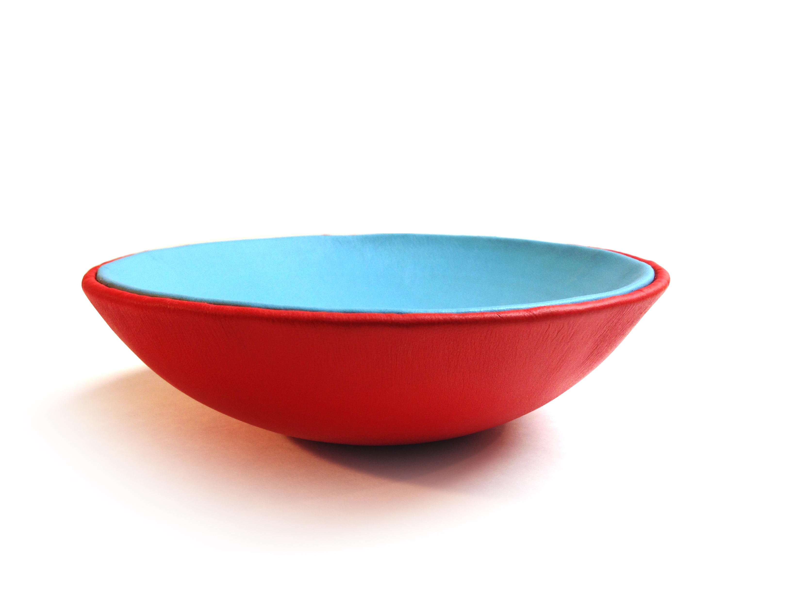
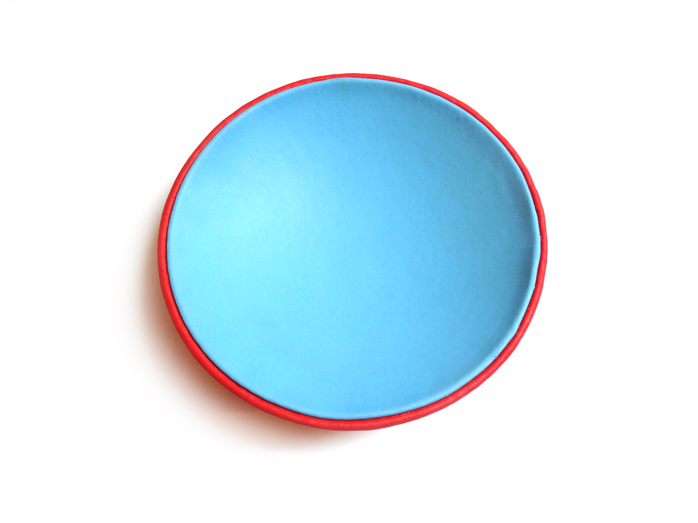

PROJECT DESCRIPTION
Inspired by seamless leather phone cases, I designed and fabricated a leather bowl. I wanted it to be able to hold water, be dimensionally stable, and created by a repeatable process (suitable for mass production). To that end, I designed an assembly that had a very short tolerance stack from base to top (with no seams on the base or top datum surfaces to introduce large tolerances), a 3D-printed core for dimensional stability, and a leather stretching fixture.
DESIGN EVOLUTION
After sketches and a low-resolution protoype, I determined that:
Full design and prototyping document:

Finished bowl.

Bowl top view.